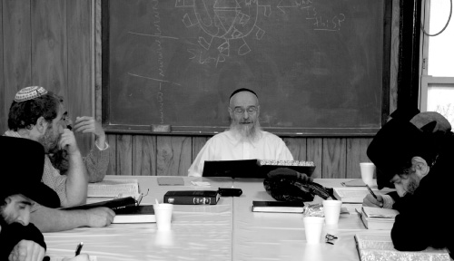

Seeing G-dliness
Stories from the Hadar HaTorah Alumni Farbrengen with Rabbi Yaakov Goldberg celebrating the Yeshiva’s 50th Anniversary.
Transcribed by Rabbi Bentzion Elisha

THE JERK
There was once a very unrefined Jew by the name of Moshke. Not only was he arrogant and altogether not very nice, but he was also quite foolish!
One year, a strange desire overtook him. He wanted to be the one chosen to blow the shofar on Rosh Hashanah. Since he was close to the paritz, the land baron of the area, he decided to use this most powerful contact to materialize his craving. He didn’t seem to care too much for the fact that usually, the most respectable and virtuous Jew of the town receives this great honor. This year, he wanted to do it himself regardless of his questionable worthiness.
Moshke went to his friend the paritz and told him of his wish to blow the shofar in the shul on Rosh Hashanah. The paritz indifferently agreed to his friend’s request, although he couldn’t have cared less for his Jewish friend’s need for this strange honor of blowing a shofar. Moshke had the paritz sign a letter decreeing that Moshke would be getting the great honor of blowing the shofar that Rosh HaShana; then, he sent the letter to the leader of the Jewish community.
When the community leader received the signed letter from the paritz, he was dumbfounded. He immediately went to the rabbi of the town to seek his guidance. He couldn’t accept that an arrogant imbecile like Moshke would be given the rabbi’s honorable role on these most holy of days.
When the rabbi was shown the letter with the authoritative signature of the governing paritz, he just smiled and shrugged off the whole matter. He assured the community leader that all would be well and instructed him to change nothing of the regular order of things.
When Rosh Hashanah arrived, Moshke came to the shul with his expensive extra long shofar, anticipating his great moment of glory. When it was time to blow shofar however, to his utter amazement, the holy rabbi was summoned instead of him! Surely they got the paritz’s letter, he thought to himself. He justified this blunder in his mind with the assurance that tomorrow, on the second day of Rosh Hashanah, he would surely get the honor.
When the second day came, again Moshke brought his fancy shofar and waited impatiently to be brought to the Bima. To Moshke’s grave disappointment, the rabbi was called upon again to blow the shofar for the community.
“I was supposed to be the one blowing the shofar,” he mumbled to himself again and again. His rage grew until his anger consumed him to such an extent that he vowed to punish the rabbi and the community leader for their blatant disrespect.
The day after Rosh Hashanah on Tzom Gedalya, the Rabbi and the community leader were called to attend an emergency meeting with the paritz. Moshke had gone to the paritz and informed him that the Jews in the shul completely disregarded the paritz’s letter, demonstrating their disregard of his authority; the Jews, therefore, should be punished.
When confronted, the rabbi smiled and said to the paritz, “Dear sir, with all due respect, I would like to take this opportunity to teach you a little about Judaism. In the holiday season marking the beginning of the Jewish year, we blow the shofar on three different occasions: the first day Rosh Hashanah, second day Rosh Hashanah and on Yom Kippur. Seeing how highly regarded Moshke is in your eyes, esteemed baron, we wanted to honor him with the greatest honor, blowing the shofar on Yom Kippur by N’ila, the very last closing prayer.”
The paritz turned to Moshke and in an irritated voice said, “Moshke, you impatient, horrid little Jew. See how they wanted to honor you and you are making such a fuss over nothing!”
Moshke, with tears in his eyes, replied, “But Baron, on Rosh Hashanah there are so many T’kios to make with the shofar. On Yom Kippur at N’ila, there is only one blow!”
“You stupid Jew!” the paritz bellowed impatiently. “When you are given the chance and you have the shofar in your hands, nobody can stop you, Moshke. You can make as many blows as you like!”
When someone has the “shofar” in one’s hands, when a person is given the privilege of speaking in front of an audience, the individual must realize that one cannot do and say as one pleases; a person cannot make as many T’kias as he wishes at the N’ila prayer when only one is customarily expected…
The speaker has a big responsibility and an obligation to say the appropriate and correct things.
THE INK OF A FARBRENGEN
There’s a story told about Rabbi David HaLevi Segal, known as the Taz (the Turei Zahav), the famous commentator on the Shulchan Aruch. He married the daughter of the famed Rabbi Yoel Sirkis, known as the Bach (the Bayis Chadash), another great Shulchan Aruch commentator about whom it’s said that when he passed away, Gehinom was cooled down so he would pass through to Heaven without any discomfort.
To make a living, the Taz owned a store which his wife operated while he sat and learned. After some years, she requested that he help her in the store. He would come and help for a few minutes, a quarter of an hour or maybe even half an hour, and then he would disappear, going back to his studies.
His wife, at some point, confronted him about this phenomenon, asking why he only helped her for such a small amount of time.
“Why did you marry me?” asked the Torah giant.
“Obviously I married you because you were considered an outstanding Illui, a Torah prodigy,” his wife answered.
“Well what is an Illui? An Illui is someone who can learn and master in a few minutes what it could take someone else a few hours to learn well. Well, this also is the case with helping in the store; I can achieve in a few minutes more than others can in several hours!”
Likewise regarding drinking at a Farbrengen – for some, drinking a small portion of L’chaim can achieve more than what some other people achieve only with a whole bottle…
Dovid HaMelech says in T’hillim (45:2), “Leshoni Et Sofer,” my tongue is like a writer’s quill.
Before fountain pens and ballpoint pens were invented, people wrote with quills. Quills are feathers that are sharpened at the ends. The writer had to dip the quill into ink every so often to be able to continue to write.
So it is by Farbrengens as well. We must dip our tongue in some L’chaim to moisten it a little so the words can come out, bypassing any barriers.
MORE PRECIOUS THAN PEARLS
A Rabbi who was trying to recruit students for his Yeshiva traveled to nearby towns and villages where he met many Jewish families whose children were not yet given the opportunity to learn Torah.
One particularly bright boy of Bar Mitzvah age caught the rabbi’s attention. Attempting to emphasize to him the importance of learning Torah, the rabbi told him that Torah learning is more precious than pearls. This boy was quite impressed by this piece of information, and instantly enrolled in the Yeshiva.
This boy was so motivated by the rabbi’s words that “learning Torah is more precious than pearls” that he learned with diligence and dedication and toiled for a whole decade! By this time, the once simple village boy became quite a Torah scholar, having developed his mind and heart to become a fine young man of high morals, with a vast knowledge of Judaism and a refined character.
The rabbi took him aside in yeshiva one day and told him that since the boy was now of marriageable age, it was time that his parents make a Shidduch for him. Thus he was instructed to go back to his parents’ village. The boy packed his belongings and set out home bound.
On the way back to his parents, he stopped over at an inn. In the inn the boy started learning a complicated topic in Rambam, which made him lose all sense of time, until he satisfactorily settled the problem almost a week later. At the end of his stay, he informed the innkeeper that he would be leaving. The innkeeper, a simple observant Jew, presented the yeshiva student with a bill which amounted to 1000 coins.
Upon seeing the bill, the student told the innkeeper he wanted to share with him what he had been laboring on for his entire duration at the inn. The boy first mentioned what the Rambam had stated and then presented the Ravad’s question on the Rambam. He introduced the Kesef Mishna’s answer to the Ravad’s question, which didn’t sit well with the boy because of a few variables which he proceeded to share. Then the boy continued to explain how he managed to answer the objection of the Ravad and delivered an astounding Chiddush which brilliantly settled all opinions, which took the words of the Rambam, the Ravad and the Kesef Mishna to a much deeper level of understanding, a beautiful mosaic of thought.
After the delivery of the inspired discourse, the boy offered the innkeeper a unique deal.
“Dear innkeeper, I have just presented to you a most complicated Kashia, a complex question, with a thorough comprehension of a few commentators as well as my original solution for this intricate subject, which took me several days to learn and solve. Since you have presented me with the bill for my stay here in your cozy inn, I’d like to make you a special proposal.
“I learned from my teacher that Torah study is more precious than pearls, and here I presented you with not one pearl, but a whole necklace of pearls, strung together by an organized, original Torah insight. Surely, a strand of pearls costs at least 5000 coins. You are requesting of me 1000 coins. Since Torah study is worth more than pearls, I should charge you more than 5000 coins for listening to my words of Torah; however, I will only charge you 5000 as a discount. The 1000 you asked for will be settled by your debt to me, and the rest, the remaining 4000 coins, you will give to me. Surely this is a fair exchange with a great incentive for you…”
Even though the innkeeper was a simple Jew who admired Torah scholars and appreciated hearing words of Torah, nevertheless he did not agree to this business deal.
“I must say that your Torah words were very moving and I’ve never heard such inspiring teachings. However, I need real money. I can’t buy my necessities with your words,” said the innkeeper.
“My dear innkeeper. I see that you drive a hard bargain. Listen, even though this is completely beneath its worth, I will give you the privilege of having listened to my D’var Torah as even exchange to my stay’s cost. My Torah presentation, which surely is more precious than even pearls, easily exceeds the worth of 5000 coins. However, I will let you have it for 1000 coins, the amount you are charging me. This is a deal of a lifetime. Have you ever heard of such a find?!” the yeshiva scholar exclaimed in exasperation.
“I’m sorry young rabbi, but you stayed here almost a week eating three meals a day. I really need actual money!” insisted the innkeeper.
Displeased, but without any other choice, the boy took out the bag where he kept the money his parents gave him and paid his debt before turning to leave.
But then, instead of going back to his parents’ home, he changed his course and traveled back to his yeshiva’s rabbi.
Completely disillusioned and depressed, the boy confronted the rabbi, telling him the entire story. After he went over the whole exchange with the innkeeper, he asked him, weeping, “Rabbi, when I met you as a young boy, you told me that the words of Torah are more precious than pearls. I studied so hard, completely believing in what you had told me. How is it that the first experience I had coming out of the yeshiva seems to contradict your words? Not only did the innkeeper not respect my words of Torah as something more precious than pearls, he didn’t even respect them as matching the price of pearls?”
The rabbi asked his student to come to his home where he would answer his question.
The rabbi lived in a house with a barn behind it, as many houses did in the village. When they arrived at the rabbi’s home, the rabbi asked his wife to lend him her strand of precious pearls, which she did. The rabbi then took his disenchanted student to the barn, where his animals lived.
The rabbi took the pearl necklace and proceeded to place it next to his cows head. The cow looked at the pearls grunting and mooing in a lazy song of apathy. After sniffing them, the cow just walked away. The rabbi then took the pearls and placed them in front of the sheep. The sheep glanced at the pearls momentarily, and immediately afterwards glanced away, focusing its concentration on something more to its liking.
The rabbi continued this experiment with the rest of his livestock; yet the response was the same as it was with the cow and the sheep – phlegmatic disinterest and placid indifference.
The rabbi put the pearls away in his pocket and then took some dirty moldy hay from inside the barn and faced the animals. When the animals saw the treasure in his hands, they all became very excited, raising such a ruckus as each one pushed the other to gobble the hay from the rabbi’s hand.
After the rabbi let the livestock consume the hay in his hand, he walked over to his student who was watching the scene in the corner.
“My dear student: The words I told you were, and are, 100% true. Torah study is certainly more precious than pearls. However, even though pearls are really pearls it doesn’t change the fact that Beheimos, animals, are just Beheimos!’
SEEING G-DLINESS
A great revelation of Hashem occurred at the time of Mattan Torah.
The verse says that the Jews then “saw the sounds – Roim Es HaKolos,” and that they heard that which is usually seen. Interestingly, on a deeper level these expressions also refer to physicality and spirituality. That which is only heard – something distant or concealed from eyesight which we only hear about – is likened to spirituality. Physicality and the material world are things which we actually see.
On the occasion of Mattan Torah, the Jews “saw the sounds,” which alludes to the fact that on that day the spiritual realm, which is usually hidden, was so revealed that it was palpable, it was readily recognizable to the naked eye, while the physical world and its boundaries, which are usually seen and are so familiar, seemed so foreign and distant, to such an extent that it was likened to something a person only hears about but hasn’t actually seen for himself.
In the first commandment of Aseres HaDibros, Hashem exclaims saying, “Anochi Hashem Elokecha, I am Hashem your G-d!” Hashem revealed Himself. The Jewish people clearly saw G-dliness!
But the second commandment seems like a strange put-down. In the second commandment Hashem states: “Lo Yihiye Lecha Elokim Acherim, you shall have no other gods.”
A logical question arises: If Hashem revealed himself to the Yidden so clearly, saying “I am you G-d,” why then did He command them not to serve idols? Why would they want to do such a lowly thing when they literally had just seen Hashem? Seemingly, the command is unnecessary.
The answer to this question is quite simple. The reason the Yidden were commanded not to worship idols, even though it might appear to be beneath them, is because Hashem wanted to warn them of possible situations that could arise when they would soon descend back into the physical world as they once knew it, after the revelation of Hashem on Har Sinai. During this climactic time when it was visibly apparent that “I am your G-d,” this warning might seem pointless, however when the Yidden will go into the world, they might err and give credence to the material world and its distractions.
A person could be holding on the very highest levels where the individual might even have the clarity of “I am Hashem your G-d,” however, the world remains a place where the Yetzer Hara doesn’t stop working, attempting to lure the individual to other pursuits and interests besides G-dliness, to Elokim Acherim, other gods.
On a personal level, one could ask a related question. How could it be that a person who went to yeshiva, a person who “saw G-dliness,” could act in a manner below his previous level to the extent that it might even appear like Haya K’lo Haya, that it’s as if it never happened, that it’s as if he never went to yeshiva?
Or how could it be that even though a person learned a Maamer, or his Davening was full of passion and kavana, he puts the Seifer or Siddur down and acts in a manner that doesn’t reflect that which was learned or the prayer that was prayed?
How is it that a Jew who studied in yeshiva can find himself in his office on 42nd St, or 34th St, or any street for that matter, while the billboards and streets get the person’s heart pumping and mind pulsing, where the material world seems so real while G-dliness seems so very distant?
Even while a Jew is doing well spiritually and is on the level of seeing G-dliness – “I am Hashem your G-d” – he is still warned “You shall have no other gods before Me,” because a person should never be so assured of himself, blinded by the notion that he is unsinkable in this world. Even though one moment you are “seeing G-d,” beware! The Yetzer Hara doesn’t ever stop, and attempts to make the person fall with other worldly traps.
The story of the Rashbi, Rabbi Shimon Bar Yochai, adds yet another dimension to this subject of “I am Hashem your G-d” and “You shall have no other gods before Me.”
The Rashbi and his son hid from the Romans in a cave for thirteen years, escaping a death sentence. During this time they were learning Torah day and night, completely detached from the world.
Miraculously, they didn’t have to worry about anything material.
They had the cave for shelter. They ate from the fruit of a carob tree that grew right by the cave, which also had a refreshing spring that ran next to it from which they drank. They covered their bodies with sand during the week so as not to ruin their clothes, which they only wore on Shabbos and Yom Tov. In this manner, completely removed from the world, they catapulted to great spiritual heights during their stay in the cave. They are renowned for their unique lofty level of awareness of “I am Hashem Your G-d” and “Ein Od Milvado,” there is nothing besides Him.
When the Roman king died and the decree was annulled twelve years later, they exited it. They were stunned to see people plowing and planting the earth. To them it was unfathomable to waste precious time on such mundane tasks. How could people neglect Torah study and deal with worldly concerns?
Whatever they looked at was eaten by fire. A Heavenly Voice told them to go back into the cave, saying, “Have you come out of the cave to destroy My world?”
So they went back for another year. When they left the cave this second time, they had an entirely different perspective. They recognized the great value of the Jewish people who clung to Torah and Mitzvos, despite the decrees and persecution of the Romans, while working in the world.
Even though the Rashbi and his son were on an extremely high state of awareness of “I am your G-d,” during the extra year in the cave they developed an added understanding that despite the experience of being completely removed from the world, specifically descending into the world and working with it is essential and valuable.
When they came out of the cave the second time, the Rashbi and his son sought to help the Jewish people both physically and spiritually.
Hashem created the world in order for us to settle it, “Lasheves Yetzara.” It is necessary to come out of one’s cave of seeing G-d and help the world, all the while maintaining focus on G-d. We must toil within the world (with all of its challenges, difficulties and hardships), yet remain above it.
A vital thing to remember though is that there are two loves existing that completely contradict each other: Ahavas Hashem, love for Hashem, and Ahavas Olam, the love of the world. Each one is juxtaposed against the other, and at every moment a person has to choose between the two, “I am Hashem your G-d,” Ahavas Hashem, or “Elokim Acherim,” Ahavas Olam…
PERSONAL MATTAN TORAH
When he first came to America, the famed Chassid Itche the Masmid was shocked at what he saw. When asked about his experiences in this new land, he exclaimed, “They actually eat real burgers! B’poel Mamash, in actuality!” People weren’t pretending or wishing to eat burgers that were almost impossible to get in Europe; they were actually doing it!
Dreaming about doing something just isn’t enough…
Celebrating the 50th year of the Hadar HaTorah Yeshiva, the world’s very first Baal T’shuva yeshiva, is quite a tremendous milestone for a Mosad which has literally touched thousands of people.
We have here today alumni who learned in the Yeshiva over four decades ago, all the way up to our current students.
There is a Baal T’shuva in Memphis I met a few times when visiting my son-in-laws’ Chabad house over the years, who has kept reminding me of an analogy I gave him of doing T’shuva, returning to one’s Jewish roots or advancing in one’s spirituality.
The analogy is that of driving a car.
There are two things a person looks at while driving: the windshield, which shows the driver what’s ahead; and the mirrors, showing someone what is in back of them.
A person cannot drive properly if he is preoccupied with the mirrors showing what’s behind him. Not only that, but it would be downright dangerous; rather he needs to mostly look at what is ahead of him so he can get to his destination safely.
So too it is with life and with Judaism. Sometimes it’s important to reflect back, but the great majority of the time, a person needs to look forward.
It’s not about where you have been as much as where you are going.
Along the same line, my father used to say regarding Shidduchim; that you shouldn’t think of making a Shidduch, you should just make one.
G-D-CENTERED
In today’s day and age there is a prevalent self-centered attitude that manifests itself in many ways.
A person easily judges everything using the words “I like this” or “I don’t like this.”
“This part I like” while “That aspect I don’t care for.”
This includes this Farbrengen, “I like this Farbrengen,” “I don’t like this Farbrengen,” “It bores me, I heard all this already” or “He is funny, it’s entertaining for me, I like it!”
The pursuit of self-gratification puts all experiences on a scale measuring just how much of it is good for “me.” The “I” rules.
The obsession with oneself is so dominant that this self-centered attitude even permeates child rearing. Parents ask the child for what they like at every step, aiding the child to lead the way instead of being taught and shaped by the parents.
This attitude is completely opposite of what Chassidus is all about!
This educational method completely undermines the idea of Kabbalas Ol, accepting the Yoke of Heaven, which requires doing things that sometimes a person might not want to do.
The backbone of Chassidus is Bittul Ha’yesh, the nullification of self, which practically means that a person doesn’t just do whatever he likes when he likes it, but rather an individual tries to fulfill the Ratzon HaElyon, the supernal will of Hashem.
A key advice to rid oneself of such thinking is to get out of oneself. Stop thinking about yourself, and instead of being self-centered become G-d centered.
Like it says, “Ani Nivresi Leshamesh Es Koni, I was created to serve my Maker.” The only reason a person is alive is not to enjoy the world, but rather to serve Hashem.
Until a person’s death, when his mission is complete, as long as a person wakes up in the morning, it means that his job isn’t complete and he is needed to do more.
We must always remember that we are on a special spiritual mission, a mission which should saturate our entire time here on earth.
SIYUM HASHAS
Rabbi Vishedski remarked one time that he wanted to become a millionaire, so he went to work to achieve this desire. At first he was getting $100 a week, then $200. After some time he decided to quit this ambition, since it was just too difficult.
When asking him what he did then, he answered that since working to attain his first million was too hard for him, he decided to work on his second million dollars!
One of our Alumni here told me that he is about to finish learning the Shas for the second time!
There are so many people that didn’t complete learning the Shas even once! Perhaps we could suggest for them to skip the first round and just jump right into learning it for the second time…
I just want to clarify and point out that the Shas isn’t yours to finish.
It’s one thing to learn the whole cycle, but quite another to walk away from the cycle with a certain haughtiness or egotistic attitude that one has finished learning the Shas, or that one has completed it.
Whether a person learns one Daf, or one Masechta, or the whole Shas, he should be conscious of the awesome fact that that he is learning and uniting with Chochmas HaBorei, the wisdom of the Creator.
The achievement of learning is a connection to Hashem, not the inflation of one’s ego as a result of learning a certain amount.
The Rebbe states in the HaYom Yom of the 29th of Teves: “Anan Poalei DeYemama Anan,” we are day workers.
The job of Chasidim is to continuously keep working at it and illuminating, adding the light of “day,” Torah and Mitzvos, to wherever we are. Unlike people who retire when they are done with work and move to Florida, and waste their days baking in the sun, Chasidim are never done.
It’s not up to us to finish, nor are we ever finished; we are assigned to keep working.
Hopefully soon, we will see with our own eyes that which is “heard” (G-dliness), and hear about that which is “seen” (physicality) with the coming of Moshiach in the Geula HaShleima, the complete redemption, when Hashem will be completely revealed.
***
Hadar HaTorah is the world’s first Baal T’shuva Yeshiva (for Jewish men with little or no formal background in Jewish knowledge or practice) literally transforming thousands of lives since its founding in 1962.
Telephone: (718) 735-0250
Website: HadarHatorah.org
Rabbi Bentzion Elisha is an award-winning photographer (ElishaArt.Com) and writer based in Crown Heights, Brooklyn.
Rabbi Yaakov Goldberg. "Seeing G-dliness." Beis Moshiach, no. 840 (July 4, 2012).